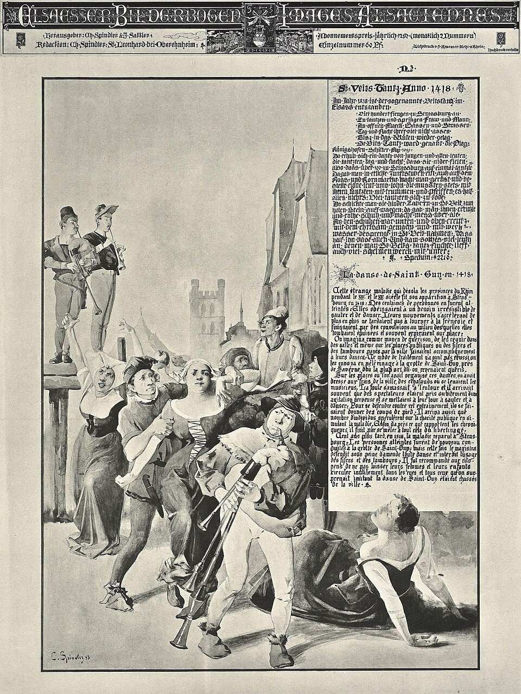

La Plaga del Baile de 1518
¿Realmente murieron bailando?

En julio de 1518, en la ciudad de Estrasburgo, ocurrió uno de los acontecimientos más extraños de la historia. Una mujer comenzó a bailar sin parar en plena calle y, poco a poco, otras personas se unieron a ella.
El baile que se extendió
El extraño fenómeno comenzó a extenderse por las calles de Estrasburgo. Cada vez más personas comenzaron a bailar sin poder detenerse.
Según los relatos de la época, alrededor de 400 personas llegaron a participar en este extraño acontecimiento.
Algunos bailaban durante horas e incluso días, sufriendo cansancio extremo y heridas en los pies.
¿Realmente murieron bailando?

Algunos relatos cuentan que varias personas murieron debido al agotamiento provocado por el baile constante.
Sin embargo, no existe una cifra exacta y confirmada de fallecidos. Por eso, no se puede asegurar que cientos de personas murieran bailando.
La verdad detrás del misterio
Existen varias teorías para explicar lo ocurrido. Una de ellas señala que el hambre, el miedo y el estrés pudieron provocar un fenómeno de comportamiento colectivo.
Otra teoría propone una posible intoxicación causada por un hongo que contaminaba el centeno. Sin embargo, ninguna explicación ha sido demostrada completamente.
¿Enfermedad, miedo colectivo o misterio?
La plaga del baile de 1518 continúa siendo uno de los acontecimientos más curiosos y misteriosos de la historia.